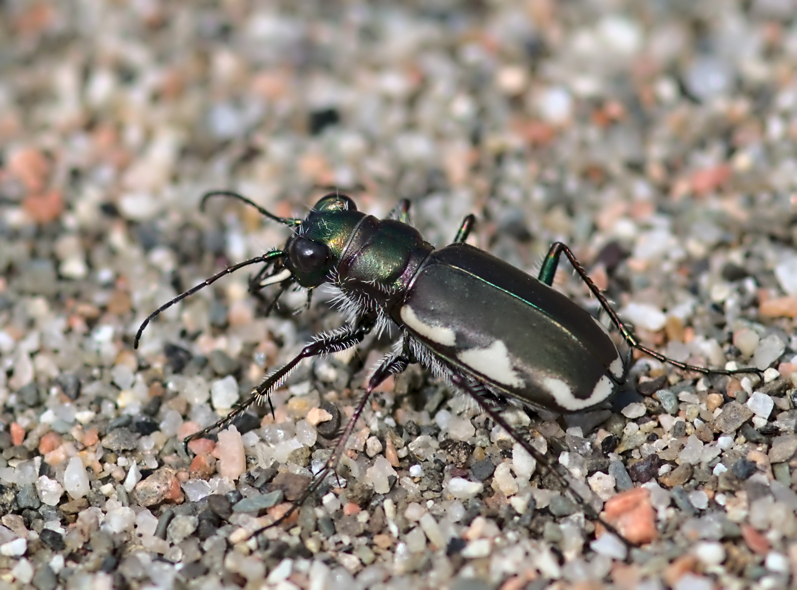

LeConte's Tiger Beetle (photo: your name / date or iNaturalist observer)
Identification
- Small-medium (10–13 mm), dark bronze with white maculations (often reduced or absent).
- Head and pronotum metallic green; legs long.
- Active early in spring; short flights.
Habitat in New Brunswick
Sandy paths, gravel roads, and open fields with bare ground. Prefers dry, sunny areas; often in disturbed sites.
Flight Season in NB
April to July (early spring peak; some into early summer).
Distribution & Notes
Scattered in southern and central NB; locally common in suitable habitat. Early-season species.